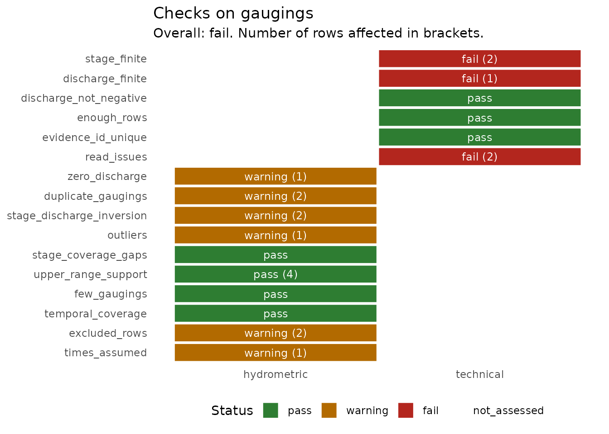
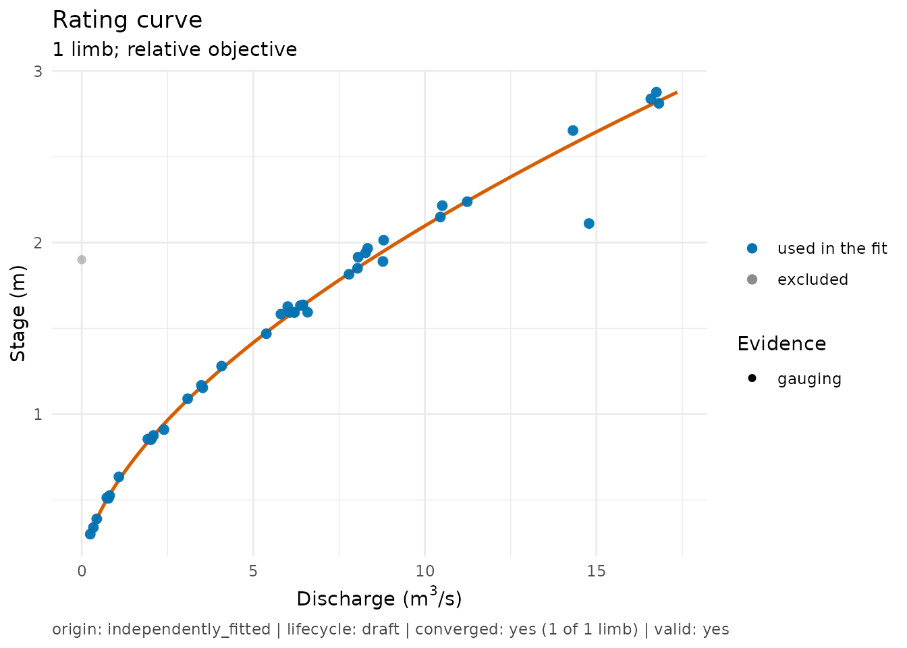

Start Here: From a File of Gaugings to a Rating
Jonathan Payne, Environment Agency Flood Forecasting
November 2026
Source:vignettes/start_here.Rmd
start_here.RmdAudience: novice. You have a file of spot gaugings
and want a rating from it. No knowledge of the package, of S7 or of the
mathematics is assumed; terms are explained where they first appear, and
vignette("glossary") lists them all.
This page takes one file from start to finish. The file is synthetic, a made-up station called Example Weir, in the layout of an Environment Agency gauging export. It has a few faults in it on purpose, because a real archive does, and you will see what the package does about each.
flowchart LR A[Your file] --> B[read_gaugings
read it, keep every row] B --> C[validate_gaugings
is it usable, does it look right] C --> D[fit_rating
fit, and record how] D --> E[assess_rating
look from six sides] D --> F[autoplot
draw it] E --> G[apply_rating
stage to discharge] F --> G G --> H[A person reviews
and decides]
The diagram shows the route. Every step keeps what the one before found, and none of them removes a row from your data. At the end a person decides whether the rating is fit to use. The package never makes that decision for you.
Your file
path <- system.file("extdata", "example_gaugings.csv", package = "reach.rate")
cat(readLines(path, n = 6), sep = "\n")
#> "Station number","Station name","Date","Time","Stage","Flow","Remark"
#> "TEST001","Example Weir","24/03/2014","16:45:00","0.301","0.2487",""
#> "TEST001","Example Weir","07/07/2014","13:00:00","0.340","0.3401",""
#> "TEST001","Example Weir","04/08/2014","12:00:00","0.390","0.4378",""
#> "TEST001","Example Weir","13/09/2014","09:45:00","0.510","0.7807",""
#> "TEST001","Example Weir","01/12/2014","09:15:00","0.513","0.7309",""Each row is one spot gauging: a stage in metres and a discharge in cubic metres per second, measured together at one time. A rating curve is the relationship between them, so that a stage reading, which is easy to measure continuously, can be turned into a discharge, which is not.
Read it
gaugings <- read_gaugings(path)
#> read_gaugings(): 43 rows, 1 stations, date format %d/%m/%Y.
#> Rows with a note: 3. Most common: discharge missing (1), stage missing (1), stage not a number (1), time missing, midnight assumed (1).read_gaugings() reads every column as text and then
turns it into numbers and dates one step at a time, so that a problem is
noted on its own row and not silently dropped or changed. It tells you
what it found:
read_summary(gaugings)
#> issue n_rows share_of_rows
#> <char> <int> <num>
#> 1: discharge missing 1 0.02325581
#> 2: stage missing 1 0.02325581
#> 3: stage not a number 1 0.02325581
#> 4: time missing, midnight assumed 1 0.02325581
gaugings[!is.na(read_issue), .(source_row, stage_original, discharge_original, read_issue)]
#> source_row stage_original discharge_original
#> <int> <char> <char>
#> 1: 7 --- ---
#> 2: 15 1.138m 3.4501
#> 3: 40 2.811 16.8201
#> read_issue
#> <char>
#> 1: stage missing; discharge missing
#> 2: stage not a number
#> 3: time missing, midnight assumed--- is a placeholder for “no value” and
1.60m has a unit stuck to it. Both are kept, with the
original text beside them, and each row says what was wrong. Nothing has
been removed or corrected.
Check it
checks <- validate_gaugings(gaugings, reference_time = as.POSIXct("2025-01-01", tz = "UTC"))
checks
#> <FlodeAssessment> gaugings, 43 row(s) assessed. Overall: fail
#> 7 pass, 6 warning, 3 fail, 0 not assessed
#> [fail] stage_finite: 2 rows have a stage that is missing or not finite.
#> [fail] discharge_finite: 1 row has a discharge that is missing or not finite.
#> [fail] read_issues: 2 rows have a note from reading the file (for example: stage missing; discharge missing).
#> [warning] zero_discharge: 1 gauging has a discharge of zero. A rating on relative error cannot use them.
#> [warning] duplicate_gaugings: 2 gaugings are an exact duplicate of another.
#> [warning] stage_discharge_inversion: 2 gaugings are part of a stage-discharge inversion: a discharge more than 20% below that of a gauging at a lower stage.
#> [warning] outliers: 1 gauging lies off the curve of its neighbours in stage.
#> [warning] excluded_rows: 2 rows are marked as excluded.
#> [warning] times_assumed: 1 gauging has no time of day, so midnight was assumed.There are two kinds of finding. A fail means the data cannot be used as it stands, such as a stage that is not a number. A warning is a judgement for you to make, such as a gauging that is far from its neighbours. The check never removes anything; it names the rows concerned so you can look.
assessment_checks(checks)[status %in% c("fail", "warning"), .(check_id, status, message)]
#> check_id status
#> <char> <char>
#> 1: stage_finite fail
#> 2: discharge_finite fail
#> 3: read_issues fail
#> 4: zero_discharge warning
#> 5: duplicate_gaugings warning
#> 6: stage_discharge_inversion warning
#> 7: outliers warning
#> 8: excluded_rows warning
#> 9: times_assumed warning
#> message
#> <char>
#> 1: 2 rows have a stage that is missing or not finite.
#> 2: 1 row has a discharge that is missing or not finite.
#> 3: 2 rows have a note from reading the file (for example: stage missing; discharge missing).
#> 4: 1 gauging has a discharge of zero. A rating on relative error cannot use them.
#> 5: 2 gaugings are an exact duplicate of another.
#> 6: 2 gaugings are part of a stage-discharge inversion: a discharge more than 20% below that of a gauging at a lower stage.
#> 7: 1 gauging lies off the curve of its neighbours in stage.
#> 8: 2 rows are marked as excluded.
#> 9: 1 gauging has no time of day, so midnight was assumed.
plot(checks)
Look at the two rows the outlier and zero-discharge checks point to before you go on. In a real archive you would go back to the paper record. Here we know one was entered 60% too high and one is a dry pool.
Fit a rating
fit <- fit_rating(gaugings)
#> fit_rating(): 40 of 43 rows used; relative objective, independent model, one limb.
#> Not used: 1 (stage missing; discharge missing); 1 (stage not a number); 1 (zero discharge).
#> No operational limits set: stages beyond the gauged range are returned and flagged as extrapolation. See set_operational_limits().
fit
#> <FlodeRating> 1 limb(s), origin: independently_fitted, lifecycle: draft
#> converged: yes (1 of 1 limb)
#> valid: yes
#> breakpoints: one limb
#> evidence: 40 of 43 rows used
#> operational limits: not set; stages beyond the gauged range 0.301 to 2.876 m are flagged as extrapolation
#> limb lower_stage_m upper_stage_m C a n rmse_cms
#> <int> <num> <num> <num> <num> <num> <num>
#> 1: 1 0.301 2.876 3.009912 0.06841777 1.69713 0.7886304
#> r_squared
#> <num>
#> 1: 0.9722328fit_rating() makes choices a careful analyst would not
argue with, and says what they were. It fits one limb,
one equation \(Q = C\,(H - a)^n\) over
the whole range, because a rating with several limbs is a decision about
the river that you should make, not the software. It fits on the
relative objective, because gauging error is usually
proportional to the reading. And it leaves out the rows it cannot use,
listing each with its reason:
rating_provenance(fit)$fit_rating$excluded[, .(evidence_id, reason)]
#> evidence_id
#> <char>
#> 1: G007
#> 2: G015
#> 3: G030
#> reason
#> <char>
#> 1: marked as excluded: stage missing; discharge missing
#> 2: marked as excluded: stage not a number
#> 3: zero discharge: the relative objective needs positive discharge (use objective = "absolute" to keep it)The printed rating also says whether the optimiser converged and whether the equations are valid. They are separate questions, and both should be yes.
Look at it
autoplot(fit)
The curve runs through the gaugings. Evidence that is not a gauging would have a different shape, and rows left out of the fit are drawn grey and faint, not hidden. The caption gives the rating’s status.
Assess it
assessment <- assess_rating(fit, reference_time = as.POSIXct("2025-01-01", tz = "UTC"))
assessment
#> <FlodeAssessment> rating, 40 row(s) assessed. Overall: warning
#> 38 pass, 6 warning, 0 fail, 2 not assessed
#> data: 12 pass, 4 warning, 0 fail, 0 not assessed
#> numerical: 8 pass, 0 warning, 0 fail, 1 not assessed
#> statistical: 8 pass, 0 warning, 0 fail, 0 not assessed
#> hydraulic: 5 pass, 0 warning, 0 fail, 0 not assessed
#> operational: 1 pass, 1 warning, 0 fail, 1 not assessed
#> provenance: 4 pass, 1 warning, 0 fail, 0 not assessed
#> [warning] duplicate_gaugings: 2 gaugings are an exact duplicate of another.
#> [warning] stage_discharge_inversion: 1 gauging is part of a stage-discharge inversion: a discharge more than 20% below that of a gauging at a lower stage.
#> [warning] outliers: 1 gauging lies off the curve of its neighbours in stage.
#> [warning] times_assumed: 1 gauging has no time of day, so midnight was assumed.
#> [warning] operational_limits_stated: No operational limits are stated for this rating.
#> [warning] evidence_assumptions: Converted from a plain table; filled evidence_id, site_id, source_type, source_name, source_version, quality_code, notes, exclusion_reason, included, weight, metadata. source_type assumed 'gauging', weight assumed 1, included TRUE unless stage or discharge is missing.
#> [not_assessed] interval_ordering: No bootstrap draws, so interval ordering could not be checked.
#> [not_assessed] extrapolation_extent: No limits are stated, so their extent cannot be judged.assess_rating() looks at the rating from six sides: the
data, the numerical behaviour of the
fit, the statistical quality, the
hydraulic plausibility, the
operational limits and the provenance.
There is no score. A single number would hide exactly the things a
reviewer needs to see, so each check says what it found and what to look
at next. Read the ones that did not pass:
assessment_checks(assessment)[status %in% c("warning", "fail"), .(domain, check_id, message)]
#> domain check_id
#> <char> <char>
#> 1: data duplicate_gaugings
#> 2: data stage_discharge_inversion
#> 3: data outliers
#> 4: data times_assumed
#> 5: operational operational_limits_stated
#> 6: provenance evidence_assumptions
#> message
#> <char>
#> 1: 2 gaugings are an exact duplicate of another.
#> 2: 1 gauging is part of a stage-discharge inversion: a discharge more than 20% below that of a gauging at a lower stage.
#> 3: 1 gauging lies off the curve of its neighbours in stage.
#> 4: 1 gauging has no time of day, so midnight was assumed.
#> 5: No operational limits are stated for this rating.
#> 6: Converted from a plain table; filled evidence_id, site_id, source_type, source_name, source_version, quality_code, notes, exclusion_reason, included, weight, metadata. source_type assumed 'gauging', weight assumed 1, included TRUE unless stage or discharge is missing.Use it
apply_rating(fit, c(0.5, 1.2, 2.5))
#> stage discharge extrapolated support
#> <num> <num> <lgcl> <char>
#> 1: 0.5 0.7231181 FALSE interpolation_observed
#> 2: 1.2 3.7124969 FALSE interpolation_observed
#> 3: 2.5 13.5974493 FALSE interpolation_observedThe support column says what each answer rests on.
interpolation_observed means the stage lies among the
gaugings, which is the best case.
Forecast models need discharge above the highest gauging, so a rating
made by fit_rating() does not stop at the edge of its
evidence. Ask for a stage beyond it and you get an answer, flagged, with
a warning:
out <- withCallingHandlers(
apply_rating(fit, c(2.5, 3.6)),
warning = function(w) {
message("Warning: ", conditionMessage(w))
invokeRestart("muffleWarning")
}
)
#> Warning: apply_rating(): 1 of 2 stage value(s) lie beyond the gauged range (0.301 to 2.876 m; stages 2.5 to 3.6 m) and are extrapolated. They are flagged 'extrapolation' in the support column. This rating has no operational limits: state the range it may be used over, and why, with set_operational_limits(x, lower, upper, basis).
#> INFO [2026-11-21 05:43:02] apply_rating(): 1 of 2 stage value(s) fell outside the rating and were extrapolated.
out
#> stage discharge extrapolated support
#> <num> <num> <lgcl> <char>
#> 1: 2.5 13.59745 FALSE interpolation_observed
#> 2: 3.6 25.61704 TRUE extrapolationThe 3.6 m row is marked extrapolation. The value rests
on the equation alone, with no gauging beyond 2.9 m to check it. Use it,
and say so.
You can turn that flag into a boundary. If you know where the rating may be used, such as a structure’s limit or a surveyed control, say so and say why:
limited <- set_operational_limits(fit, 0.25, 3.6, basis = "control confirmed by survey to 3.6 m")
apply_rating(limited, c(2.5, 3.6))
#> INFO [2026-11-21 05:43:02] apply_rating(): 1 of 2 stage value(s) fell outside the rating and were extrapolated.
#> stage discharge extrapolated support
#> <num> <num> <lgcl> <char>
#> 1: 2.5 13.59745 FALSE interpolation_observed
#> 2: 3.6 25.61704 TRUE extrapolation
apply_rating(limited, 4.2)
#> Error:
#> ! apply_rating(): 1 of 1 stage value(s) fall outside this rating's operational limits (0.25 to 3.6 m; basis: control confirmed by survey to 3.6 m). Values range from 4.2 to 4.2 m. Widen the limits with set_operational_limits() if that is a decision you can state.Inside the limits you still get flagged extrapolation. Outside them the rating refuses, because that range was your decision and the package holds you to it.
How sure is it?
The quick question is how much one gauging matters.
rating_sensitivity() leaves gaugings out and refits, and
reports the effect on discharge:
sens <- rating_sensitivity(fit, tests = "leave_high_out", stages = c(1, 2, 3))
sens
#> <FlodeSensitivity> 3 variant(s) over 3 stage(s), tests: leave_high_out
#> leave_high_out: 3 variant(s); worst: without the highest 8 (top 20.0%) changes discharge by 3.17% (0.592 m3/s) at 3 mLeaving out the highest gaugings moves the top of the curve most, which is what you would expect, since the top is the part with the fewest gaugings behind it.
Hand it on
A rating is only reviewed if someone else can open it.
export_rating() writes the rating and its assessment to a
folder:
folder <- file.path(tempdir(), "example_weir_rating")
out <- export_rating(fit, assessment, path = folder)
out$files[, .(file, bytes)]
#> file bytes
#> <char> <num>
#> 1: rating.rds 14011
#> 2: assessment.rds 7188
#> 3: limbs.csv 106
#> 4: coefficients.csv 218
#> 5: evidence.csv 7505
#> 6: history.csv 89
#> 7: support.csv 472
#> 8: assessment_checks.csv 6782
#> 9: README.txt 1549The .csv files are the same content as plain tables, for
a reviewer with a spreadsheet and no R. The .rds files are
the record. manifest.csv lists every file with a checksum,
so that import_rating() can tell if one was damaged or
edited since:
back <- import_rating(folder)
isTRUE(all.equal(back$rating, fit, tolerance = 0))
#> [1] TRUEThat compares every value, with no tolerance. It is not
identical(): no R object survives being written out and
read back byte for byte, because data.table keeps internal
pointers that differ each time. The values are the same.
The lifecycle of every rating starts at draft, and
neither exporting nor importing moves it on. Approval is a decision for
a person.
Where next
| If you want | Read |
|---|---|
| the words explained | vignette("glossary") |
| the whole package in one tour | vignette("rating_methods_overview") |
| to fit several limbs, and why | vignette("rating_curves_guide") |
| exactly what is computed | vignette("mathematical_contract") |